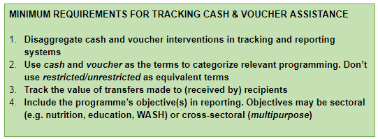

PROPOSAL
During IATI 2.03 version upgrade, a change was made to allow different aid-type vocabularies. Previous conversations on reporting cash and voucher took place on IATI Discuss suggesting that once an agreement has been reached via the CaLP group, a proposal for a non-core codelist can be made. A summary of agreements and recommendations has now been provided by the Tracking Cash and Voucher Assistance (CVA) Working Group (see Background and Summary of Agreements and Recommendations sections below for more details). As a result, we propose the following addition:
New Aid Type vocabulary:
- Code: 4
- Name: Cash and Voucher Modalities
- URL: Link to http://reference.iatistandard.org/codelists/AidType/CashandVoucherModalities once below codes have been added
The associated Cash and Voucher Modalities codelist (following definitions from the CaLP Glossary).
-
Code: 1
-
Name: Cash Transfer
-
Description: The provision of assistance in the form of money - either physical currency or e-cash - to recipients (individuals, households or communities). Cash transfers are by definition unrestricted in terms of use and distinct from restricted modalities including vouchers and in-kind assistance.
-
Code: 2
-
Name: Voucher
-
Description: A paper, token or e-voucher that can be exchanged for a set quantity or value of goods or services, denominated either as a cash value (e.g. $15) or predetermined commodities (e.g. 5 kg maize) or specific services (e.g. milling of 5 kg of maize), or a combination of value and commodities. Vouchers are restricted by default, although the degree of restriction will vary based on the programme design and type of voucher. They are redeemable with preselected vendors or in ‘fairs’ created by the implementing agency. The terms vouchers, stamps, or coupons might be used interchangeably.
This is a proposal for addition to the AidType Vocabulary codelist which is a non-core codelist. Please add any comments by responding to this post by Thursday 1st of August 2019. It will be helpful to also hear whether within your organizations, it common (or not) for you to implement (or fund) single projects which have both cash and voucher components. Currently you can disaggregate that at transaction level. We have allowed two weeks given the summer period. Following response from the community the new AidType Vocabulary codes will be added within a week.
BACKGROUND
The agreements/recommendations* below comprise the key outputs of the work undertaken through the Tracking Cash and Voucher Assistance (CVA) Working Group from 2017 to 2019. The Tracking CVA Working Group was established as the platform for engagement and decision-making for the sub-workstream on Tracking CVA, which is part of the Grand Bargain Cash Workstream. The Tracking CVA sub-workstream has been co-lead by the Cash Learning Partnership (CaLP) and the European Commission Civil Protection and Humanitarian Aid Operations (DG ECHO), and includes donors, NGOs, UN agencies and data specialists among its members.
The primary objective of this work has been to help facilitate more systematic and standardized tracking of the volume of CVA, prompted in large part by commitments to increase the scale of cash assistance, for example under the Grand Bargain. The main focus to date has been on identifying workable minimum requirements to be applied to tracking programme data at the global interagency level (with FTS and IATI identified as the critical mechanisms through which this might be captured). This is because a key aim driving the process has been to be able to calculate overall levels of humanitarian assistance delivered as cash and/or vouchers.
For readers interested in finding out more about the process and discussions which have generated the agreements and recommendations, please consult the Tracking CVA workshop reports from Rome (June 2018) and London (October 2018), along with the CaLP-commissioned scoping study on this topic. These reports also include the attendee lists from the two workshops, comprising over 45 individuals from over 30 organizations in total, along with key informants to the scoping study.
SUMMARY OF AGREEMENTS & RECOMMENDATIONS
Disaggregation of Modalities
-
AGREEMENT: Cash and vouchers should be disaggregated in tracking humanitarian aid at the global interagency level as a minimum requirement
-
AGREEMENT: There is no need to track restriction as a separate category at the global interagency level. All cash transfers are unrestricted, and all vouchers are restricted. ‘Cash’ and 'vouchers’ is the preferred terminology on the grounds of clarity and widespread usage, reflected in the CaLP Glossary
-
RECOMMENDATION: Reporting on all humanitarian assistance should be disaggregated by modality e.g. in-kind, cash, vouchers, service delivery. The aim would be to establish these as minimum tracking requirements at the global interagency level
Conditionality
- AGREEMENT: Conditionality should not be tracked at the global interagency level. Tracking conditionality at this level is of limited value as meaningful analysis would require further programming detail on the type of conditionality. This does not preclude the inclusion of conditionality as a data category at other levels of reporting, but it is not a minimum requirement
Tracking Values and Costs
-
AGREEMENT: The value of transfers made to recipients should be used as the primary basis (minimum requirement) for tracking cash and vouchers
-
RECOMMENDATION: In the medium-term track both the value of transfers plus associated programming costs
Reporting by Objective (Sectoral and Cross-sectoral)
-
AGREEMENT: Reporting on all humanitarian assistance should include the objective (e.g. shelter, food security, cross-sectoral category)
-
AGREEMENT: A separate cross-sectoral reporting category is needed.
-
RECOMMENDATION: Use ‘multipurpose’ as the cross-sectoral reporting category, and test this in practice
Based on the agreements summarized above, it is possible to identify a group of current minimum requirements for tracking cash and voucher assistance. Given the unresolved issues relating to the points classified as recommendations, these are not generally captured in the minimum requirements at this stage (although they might be in future, pending associated developments, learning and agreements).
